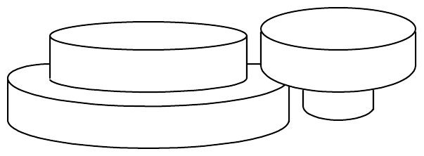
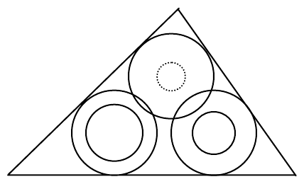

The 2000 ACM Programming Contest World Finals sponsored by IBM · Problem H
Stephen Stepper’s Supply Store sells stoppers—rubber corks for sealing jars, bottles, and other containers that have round openings. A stopper is shaped like two concentric cylinders, each of height 1.5 centimeters, glued together. Figure 1 shows two stoppers of different sizes.

When Stephen packages an order to be shipped by mail, he tries to use space efficiently to conserve packing material. Since stoppers are the smallest items in his store, he packs them last, and finds that he must often pack several stoppers into small triangular gaps at the top of the shipping carton. Stoppers must inserted in one of the two orientations shown in Figure 1. The triangular spaces are only 3 cm deep, so stoppers cannot be placed on top of one another; however, the large cylinder of one stopper is permitted to overlap the large cylinder of another inverted stopper as shown in Figures 1 and 2. Your job is to help Stephen decide what collections of stoppers will fit into a triangular space.
For instance, suppose a triangular space with side lengths 8, 7, and 10 were available, and we had to fit three stoppers in it with inside/outside diameters of 2cm/3cm, 1.5cm/3cm, and 1cm/3cm. One way to pack them is as shown in Figure 2. (The dotted circle indicates that the smaller cylinder of one of the stoppers is underneath the larger one.) The only packing Stephen will consider has the larger cylinder of each stopper touching two sides of the triangle, with no two larger cylinders touching the same pair of sides.

The input consists of a sequence of triangle specifications and descriptions of three stoppers for each triangle. Each triangular space is specified by three positive integers representing the lengths of the three sides; only valid triangles will appear in the input. A pair of positive real numbers represents each stopper. The first number in the pair represents the diameter of the smaller cylinder, and the second represents the diameter of the larger cylinder. The final line of the input file contains zeros for all the data values.
For each triangle, print a line identifying its sequence number in the input data and a line indicating whether or not the stoppers can be packed into the triangular space. Separate the output for each triangle with a blank line. Do not print anything for the final line of zeros in the input. Imitate the sample output as closely as possible.
6 6 6 0.5 1.0 0.3 2.0 0.4 1.0 10 10 10 2.0 3.0 1.0 2.0 1.5 3.5 20 6 20 3.0 4.5 0.5 1.0 4.0 5.0 8 7 10 2.0 3.0 1.5 3.0 1.0 3.0 8 7 10 2.0 3.0 2.5 3.0 2.0 3.0 0 0 0 0.0 0.0 0.0 0.0 0.0 0.0
Triangle number 1: All three stoppers will fit in the triangular space Triangle number 2: All three stoppers will fit in the triangular space Triangle number 3: Stoppers will not fit in the triangular space Triangle number 4: All three stoppers will fit in the triangular space Triangle number 5: Stoppers will not fit in the triangular space